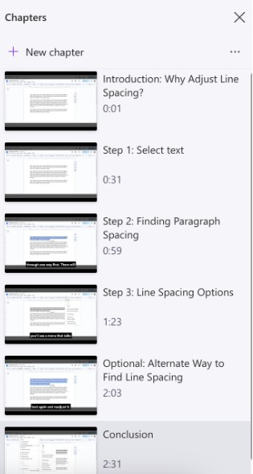
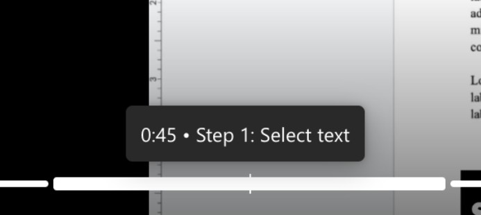
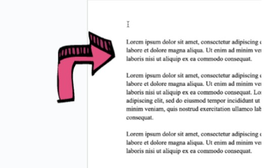

Best practices for cognitive load in digital accessibility
Cognitive load is the energy and thought put into completing certain tasks. Consider the best practices and tips below for ClipChamp.
POUR comes from the W3C for digital accessibility is the foundation of digital accessibility, ensuring videos are accessible to people with disabilities. In relation to video content, POUR is:
- Perceivable: try to use closed captions or another text alternative for auditory information, as well as audio descriptions for visual information.
- Operable: ensure that content is keyboard-accessible, and that there is time to read or watch the content.
- Understandable: captions should be accurate and video controls should be straightforward.
- Robust: make the content on the screen/video is compatible with different assistive technologies.
Adhering to the POUR principles make video content accessible to people with visual, auditory, motor, or cognitive impairments.
Tips for Digital Accessibility
Alongside principles to consider when creating an accessible video, there are design tips. Consider the stylistic and content tips below to accommodate the needs of your audience.
Keep it short
Length is relevant due to limited attention spans of users; consider portions of a video that might be slow or can be removed.
Try to:
- Speak slowly
- Keep videos short
Split content up
Breaking content into manageable portions of video can help users consume content quicker and more effectively.
ClipChamp allows you to split clips and organize sequentially. Adding chapters to aid viewer navigation throughout the video can create distinction between steps and tasks.
Try to:
-
Break a section of video into segments rather than one continuous take
Example of chapters in ClipChamp

The video is broken up into chapters:
Introduction → Step 1: Select text → Step 2: Finding Paragraph Spacing → Step 3: Line Spacing Options → Optional: Alternate Way to Find Line Spacing → Conclusion
Take it slow
Similar to the chunking and chapters, information is sometimes more easily consumed when broken up into smaller sections. Try to decisively break up steps while verbalizing all actions. This will give people time to absorb the information and follow along.
Try to:
- Pause and speak slowly
- Say the task and what you’re about to show: “Now I'll click the Export button in the top right corner”
- Avoid multitasking: instead of saying copy and paste a piece of text, break it down to three steps, show how to select, copy, and then paste the text
Allow for jumping around
Having a video or task that has broken down information makes it much less strenuous to consume. Long monologues in videos, or long paragraphs of text, become monotonous and hard to focus on. A good video will allow viewers to jump around and allow viewers to stay oriented regardless of previous knowledge.
Try to:
- Use on-screen labels
- Reiterate spoken instructions
- Keep visual aspects consistent
- Make each chunk able to stand alone
Example of skimmability in ClipChamp:

Dividing up a video into chapters is a good example of aiding skimmability. Above is an example of effective chunking.
Mark it up
On-screen markup can significantly help individuals see what tiny button they have to press. Labels, zooming in, and highlighting are all common ways to highlight important parts of a step. Annotation can support viewers with hearing or vision difficulties.
Try to:
- Use ClipChamp’s text and annotation tools to highlight any key areas of the screen, including label buttons and callouts.
Example of on-screen markup

The pink arrow on the screen doesn't impede other elements of the screen and video, while effectively pointing to the first paragraph in the frame.
All screenshots courtesy of George Coulouras, Rylee Davis and Mariya Kasumova